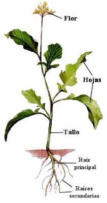

¡Vamos a explorar!
Las partes
de las plantas
Objetivo de aprendizaje: Identificar las principales partes de las plantas (raíz, tallo, hojas, flores y frutos) mediante la observación de imágenes y plantas del entorno, reconociendo sus características y la importancia de cuidarla.
Las plantas tienen partes diferentes y cada una hace un trabajo especial. ¡Toca los puntos para descubrirlas!
¡Puedes explorar todas las partes!
OBSERVA CON ATENCIÓN
Conoce las partes de la planta

Toca los nombres de la imagen para aprender
APRENDE MIRANDO
Un video para aprender jugando
Descubre las partes de las plantas con una explicación pensada para niños.
¡A demostrar lo que sabes!
Reto de las plantas
Responde estas 10 preguntas y descubre cuánto aprendiste sobre las partes de las plantas.
Elige una alternativa en cada pregunta y al final revisa tu puntaje.